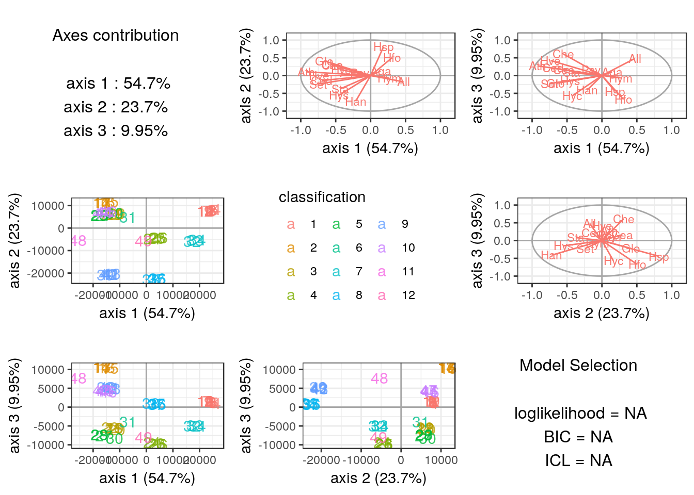

vignettes/PLNLDA_trichoptera.Rmd
PLNLDA_trichoptera.RmdThis vignette intends to illustrate the basical use of the PLNLDA function and the methods accompaning the R6 Class PLNLDAfit. To this end, let us consider an ecological data set concerning abundances of Trichopetera species, coupled with some meteological factors that may influence the presence their presence.
See ?PLNmodels::trichoptera for details.
We start by adjusting the above model to Trichoptera data set. Here, the matrix of observations \(\mathbf{Y}\) corresponds to the abundance of each species in each trapping night. The classification corresponds to the consecutive night groups caught. The model can be fitted with the function PLNLDA as follows:
##
## Performing discriminant Analysis...
## DONE!The myLDA_nocov variable is an R6 object with class PLNLDAfit, which comes with a couple of methods, as recalled when printing such an object:
## Linear Discriminant Analysis for Poisson Lognormal distribution
## ==================================================================
## degrees_freedom loglik BIC ICL R_squared
## 391 -895.3482 -1656.199 -1889.683 0.9549824
## ==================================================================
## * Useful fields
## $model_par, $fitted, $latent, $var_par, $optim_par
## $loglik, $BIC, $ICL, $loglik_vec, $degrees_freedom, $criteria
## * Useful S3 methods
## print(), vcov(), coef(), predict()
## * Additional fields for LDA
## $percent_var, $corr_circle, $scores
## * Additional methods for LDA
## $plot_LDA(), $plot_correlation_circle(), $plot_individual_map()Essentially, the most important methodis the plot method: we separate well the different groups

If new samples become available, we can predict their class
Y <- trichoptera$Abundance
predicted.class <- myLDA_nocov$predict(newCounts = Y,
newdata = matrix(0, nrow(Y), 0),
newOffsets = matrix(0, nrow(Y), ncol(Y)),
type = "response")and asses that we recover the correct class in most (but not all) cases:
## true
## predicted 1 2 3 4 5 6 7 8 9 10 11 12
## 1 12 0 0 1 0 0 0 0 1 0 0 0
## 2 0 4 0 0 0 0 0 0 0 0 0 0
## 3 0 1 4 0 0 0 0 0 0 0 0 0
## 4 0 0 0 3 1 0 0 0 0 0 0 0
## 5 0 0 0 0 3 0 0 0 0 0 0 0
## 6 0 0 0 0 0 1 0 0 0 0 0 0
## 7 0 0 0 0 0 0 3 0 0 0 0 0
## 8 0 0 0 0 0 0 0 3 1 0 0 0
## 9 0 0 1 0 0 0 0 1 3 0 0 0
## 10 0 0 0 0 0 0 0 0 0 4 0 0
## 11 0 0 0 0 0 0 0 0 0 0 1 0
## 12 0 0 0 0 0 0 0 0 0 0 0 1It is possible (experimental) to correct for other covariates before finding the LDA axis that separate well the grouping :
##
## Performing discriminant Analysis...
## DONE!And again try to predict class based on the counts and some covariates
Y <- trichoptera$Abundance
predicted.class_cov <- myLDA_cov$predict(newCounts = Y,
newdata = model.matrix( ~ Wind + 0, trichoptera),
newOffsets = matrix(0, nrow(Y), ncol(Y)),
type = "response")and asses that we recover the correct class in most (but not all) cases:
## true
## predicted 1 2 3 4 5 6 7 8 9 10 11 12
## 1 12 0 1 1 0 0 0 0 1 0 0 0
## 2 0 4 0 0 0 0 0 0 0 1 0 0
## 3 0 1 3 0 0 0 0 0 0 0 0 0
## 4 0 0 0 3 1 0 0 0 0 0 0 0
## 5 0 0 0 0 3 0 0 0 0 0 0 0
## 6 0 0 0 0 0 1 0 0 0 0 0 0
## 7 0 0 0 0 0 0 3 0 0 0 0 0
## 8 0 0 0 0 0 0 0 4 1 0 0 0
## 9 0 0 1 0 0 0 0 0 3 0 0 0
## 10 0 0 0 0 0 0 0 0 0 3 0 0
## 11 0 0 0 0 0 0 0 0 0 0 1 0
## 12 0 0 0 0 0 0 0 0 0 0 0 1